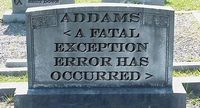

Operar... sencilla actividad. ¿Qué sádico no ha deseado verse en un hospital o institución legal, con todas las herramientas necesarias mientras desmiembra/reconstruye/extirpa/reensambla víctimas? Pues si has entrado aquí, amigo Willie, eres uno de ellos y en esta guía te enseñaremos a operar a quien sea, sin mayores complicaciones que tu fracaso de vida… ¡Y obteniendo como premio a tu labor una o más condenas por homicidio negligente! Cargos pueden variar, consúltese al ladrón con chaqueta más costoso de tu localidad y líguese al fiscal más estúpido para menor condena
El crítico experto, Mr. Bean, recomienda esta guía
¿Cirujano? ¿De qué?
Cualquiera podrá ser cirujano
Dado que, si en este mismo momento vas a un hospital diciendo que puedes operarlo todo, no quedarás mejor que un sociópata condenado a pena de muerte, tienes que elegir cuidadosamente las especialidades que seguirás, antes de meterte al mundo de la medicina. Con el paso del tiempo puedes agregar una o dos más… ¡Claro...! Eso si aún no has sido acusado de homicidio y/o/u/a/m fraude:
- Traumatólogo: especialista en reamueblar huesos y torcerlos hasta que se deban sustituir por piezas piratas de megaman. Doctor único en su especie dado que, puede hacerte caminar con el cráneo (si te lo ha cambiado de posición) y teclear con las rodillas.
- Urólogo: Homosexual/guarra con habilidad para controlar mangueras. Este individuo en un alto porcentaje, se deleita observando y palpando "monstruos" de 8 cm, y dejando estéril tanto a un mal actor pr0n, como a los vagos de alcantarilla.
- Ginecólogo: Único oficio donde la mujer brilla por su ausencia. Amantes especialistas de los órganos sexuales femeninos de todas las edades; si, DE TODAS... el querido autor sugiere que el valiente que se adentre a esta rama sea racista y confunda sus folletos de publicidad con las del pediatra.
- Cirujano pediatra: Maestro en el manejo de los niños y en el arreglo y cuidado de sus defectos (la idiotez y el autismo no encajan aquí)
- Cirujano Odontológico: Oficio parecido al político, puesto que trata sobre causar dolor. Tipo de cirujano encargado de arrancar dientes por razones tan explícitas como la teoría atómica. Oficio demandado a gritos por niños come brazos, dueños de dulcerías y locas que manejan bicicletas por despeñaderos a las 9 de la noche.
- Cirujano plástico: Es quien cuida y vela por la perfecta apariencia externa de todo humano que ha quedado en forma de “aborto” por cualquier tipo de razón. Arranca tanto la grasa como tus sueños de ser juguete de zoológico. Reconstruye (o no reconstruye) tus malformaciones y consecuencias de borracheras, entre otras cosas.
- Cardiólogo: Especialista en salpicar sangre, obstruir arterias y provocar hemorragias. Controlador (literalmente) de la vida humana y dueño del corazón del paciente (en todos los sentidos).
Si, existen muchas otras especialidades, pero, ¿por qué demonios preferirías reconstruir un oído si puedes hacer saltar corazones?
Reforzando la credibilidad
Suponiendo que ya tienes título en medicina (si no lo tienes visita Frikilibro:Guía frikipedista para convertirte en médico), a sugerencia de los maestros, deberías realizar una especialización en la materia, a la rama que más se adapte a tu parafilia. El paso es sencillo, sobornar a cada profesor del campus, incluyendo a la mano de obra esclava y al proletariado (A.K.A: estudiantes) Como se nota, se necesitará una cantidad redundante de dólares y, si se quiere asegurar el silencio de los sobornados, úsese la retaguardia de persuasión (nunca falla). Si nadie desarma tanto tu plan como su carrera, serás cirujano en menos de lo que canta un muerto.
Consiguiendo el empleo
Verás que, al graduarte, querrás usar tus habilidades en cualquier lugar...
¿Tienes la especialización? ¡Perfecto! Con un título aumentan en un 160% las probabilidades de que seas aceptado; ahora, a investigar. Puesto que, si te quedas en un banco esperando que el presidente llegue en monopatín con un gorrito de duende del cual sacará una oferta de trabajo, sacarás ramas, y las aves harán de ti un wc, debes investigar. Consulta los hospitales más cercanos fumándote una línea de coca y preguntándoselo a la ardilla que aparecerá (úsese LCD si se quiere que baile); si te gusta un pene de 30cm hacerlo un poco más difícil camina las distancias necesarias con un yunque a la espalda balbuceando como autista “hospital plis”. Una vez que te arrastres a la entrada de la edificación prepara los materiales necesarios y, al dirigirte a la oficina del jefe, sigue las siguientes opciones en orden de dos en dos.
Opciones
- Pros: El jefe y tu se la pasaran chachi piruli.
- Contra: Nadie te dará ningún trabajo, o al menos, no de médico.
- Entra con pistola en mano y amenaza al director hasta que te de el trabajo.
- Pros: Nadie se resiste al hierro y la pólvora.
- Contra: Podrías dispararle instantáneamente gracias a tu autismo.
- Recontra: ¿Es qué no habrá seguridad en el hospital?
- Llama a Hulk Hogan para que “disuada” al director.
- Pros: Con Hulk Hogan todo es posible...
- Contra: Te cobraría, y, de tanto soborno ya no hay pasta en el cochinito.
- Pros: Eres el puto amo, has entendido que desplumándote conquistas al mundo.
- Contra: Ver contra anterior.
-
- Pros: ¡Bolsillos llenos!
- Contra: Dentro de 5 años intenta no volver atacar a los uniformados con placa.
- Apenas entres a la oficina colócate en 4 patas sobre el escritorio.
- Pros: 100% de efectividad.
- Contra: ¡Duele!
- Recontra: Probablemente termines dando servicio gratis durante tu estadía en el edificio.
- Sobre-recontra: Morirás de VIH...
- Ultracontra: 1 de cada 10 directores preferirían abrirte el recto a patadas.
No importa lo que digan, el hospital no sabe nada de buenas costumbres ni de respeto.
Y repitase...
¡DAME TRABAJO CONCHETUMADRE! - Pros: Que lindos bomberos, ¿Eh?
- Contra: ¿Querías un trabajo o cadena perpetua? Hilo equivocado, chico Willie.
- Entra vulgarmente y grita vulgaridades en un vulgar idioma extranjero.
- Pros: Eh...
- Contra: Seguridad estará complacida en echarte.
- Secuestra a un cirujano y quítale tanto identificación como papeles relevantes.
- Pros: ¡Volverás listo para operar!
- Contra: Siendo negro no debiste secuestrar y personificar al blanco más popular del hospital.
- Recontra: Ese también era policía.
- Antes de saludar infórmale que tienes un panzer y el no.
- Pros: Lo verás con la boca abierta (no exactamente por tu información)
- Contra: ¿Qué coño tiene esto que ver con el trabajo?
- Antes de saludar, infórmale que tienes un C4 listo para ser detonado en el hospital si no te da empleo de cirujano.
- Pros: Ambos quedarán satisfechos con el resultado.
- Contra: Los federales no te darán tiempo ni de colocarte la bata.
- Antes de saludar, infórmale que eres chulo y estás en celo.
- Pros: ...
- Contra: ¡Viene seguridad!
- Ampútate las manos y piernas, y entra arrastrándote a su oficina.
- Pros: De la compasión te darán empleo
- Pros 2: El director puede que hasta te de su cargo.
- Contra: Correcto, no operarás.
- Patea un balón de fútbol americano contra la ventana izquierda del hospital. La pelota golpeará una estatua y la estatua caerá sobre el vago sentado enfrente. El vago, mareado, dará vueltitas y asustará al gato de turno que saltará por la ventana y le caerá encima al tirador de dardos allí ubicado. El tirador disparará mal, muy, muy mal, tan mal que el dardo caerá sobre el cuello del director sentado en su oficina. El dardo activará su esquizofrenia haciendo que baile y rompa papeles al mismo tiempo. Cuando empiece a llorar, pasa y pídele frenéticamente el empleo.
- Pros: Te dará trabajo instantáneamente... y, adicionalmente, te clavará una tijera en la nariz.
- Contra: ¿El director sufre de esquizofrenia?
- Contra2: No se permiten vagos en hospitales.
- Contra3: No hay una estatua al lado de la ventana izquierda. Tal vez a la derecha pero la vieja quejona no te permitirá razonar.
- Contra4: No tienes balón. Puede que ni siquiera sepas patear.
- Apenas entres a la oficina, mira fija y seriamente al director solo murmurando 42 a todas sus preguntas e imperatividades
- Pros: Tanta curiosidad (o miedo) le darás al jefe que probablemente te dará el trabajo sólo para que no le explotes el cerebro.
- Contra: Tanta curiosidad (o miedo) le darás al jefe que el mismo te sacará a golpes sólo para que no le explotes el cerebro.
- Enséñale postgrado, diploma e identificación al jefe.
- Pros: Si es bueno te darán trabajo (si se ha hecho recorte del personal, mucho más rápido)
- Contra: ¿Por qué no hiciste esta mierda desde un principio?
Listo, estamos adentro
Ahora te operas el busto Has llegado lejos, camarada, ya no hay vuelta tras, ya puedes empezar a tomar casos. Si has seguido la guía al pié de la letra no habrás de tener puñetera idea de la medicina, así que no debes echarte al hombro tu título, tampoco de las herramientas y debes huir de las autoridades competentes a cada segundo. Para facilitar el movimiento por el hospital, nunca te quites la máscara y a cada pregunta ponte en posición fetal. Bien, empecemos, suponiendo que ya tienes a tu primera víctima.
Pasos para operar
¿Preparado? ¿Listo? ¡A operar!
Si se desea brincar algún paso estás en la libertad de hacerlo, ya que el resultado será el mismo. Procúrese no inspirar a tus compañeros a realizar el mismo procedimiento, caerán todos más rápido.
- Colócate todo el equipo correctamente: bata, guantes, mascara, gorrito y lentes de sol; te hará menos identificable
- Si el cuerpo a tratar está oculto, destápalo; si está a la vista, analízalo. No grites, no bailes, no llores, no toques al enfermero, no golpees al paciente ni pidas una siesta.
- Pide café alegando agotamiento por exceso de sexo matutino. Una vez que te lo propinen tropieza con la primera hormiga que veas (o átomo de hidrógeno, en su defecto) y derrámale el líquido al doctor adyacente, si logras golpear a dos, mejor, esto hará que salgan de la zona enviándole saludos a tu madre. Repite el paso y podrás empezar el estilo libre. Si no hay asistentes en la sala, ignora esto y salta al 5ª paso.
- Cualquier sea el caso del paciente, palpa la mesa de las herramientas y toma el primer instrumento que te corte, y has una incisión al pie. Cuando te reprochen el movimiento, deja tu actitud de cirujano serio y empieza a hacer chistes malos.
- Opera. Chistando a cada rato y deslizándote, comienza a divertirte.
- Toma el arma más filosa de la sala y empieza a excavar en las más recónditas áreas del sujeto. Probablemente ocasiones reacciones adversas a tu misión encomendada, en ese caso brinca de la sorpresa y dile a tu asistente "eh, no pongas esa cara que yo también me he asustado".
- Toma las demás herramientas y, como no deberías saber su uso, aplícalas aleatoriamente. Lo más común es que ocasiones uno de los siguientes problemas, te daremos la solución para ellos:
- Hipertensión: Aumento de la presión. En este caso bájate del paciente o inyéctale una dosis de profopol. Si ninguna funciona, muda la sala a la luna.
- Paro cardíaco: El corazón hace huelga y se deja de mover. En ese caso dale un masaje al cuello, pies y muslos, o simplemente gritale a su corazón que funcione. Si el órgano sigue sin responder toma el desfibrilador y date una dosis de electroshock; no funcionará pero te dará unos minutos de descanso.
- Taquicardia o arritmia: Aumento o descenso del ritmo cardíaco. En el primer caso cuéntale un cuento al corazoncito y luego pídele que descanse o, deténgalo usted con sus propias manos. En el segundo caso, colócale a duras penas un marcapasos o, tal vez, corre en círculos para que se contagie de la adrenalina o inyéctale un poco de aquella cosa verde que tienes en el bolsillo. Si todo parece no funcionar y empeora la situación, vuelve a desfibrilarte.
- Hipotensión: Descenso de la presión. Si esto llegará a ocurrir encarámate en el paciente y golpéalo con mazo en mano. También puedes intentar ofrecerle un cochino de comida, el cochino nos presiona a todos... si no funciona, desfibrílate, pero esta vez en el cráneo.
- Hemorragia: La sangre empieza a escaparse. Saca una curita y aplícala en la llaga abierta, sin importar si has abierto toda una pierna o si fue un pinchazo en el dedo. ¿No funciona? Tómate la sangre hasta que no haya más o, haz una fogata. Si sigue sin funcionar, la próxima vez intenta no jugar al samurai.
 Si este ha sido el resultado final, la operación ha sido un éxito.
- Una vez que el paciente se haya vuelto a estabilizar dile a tus asistentes, si todavía están en la sala, que has acabado la práctica y es hora de trabajar en serio. Si por alguna razón el paciente no ha querido seguir viviendo (un cobarde), salta al último paso.
- 8. Muevete a otra zona diferente a la que estuviste durante tus primeros movimientos, en esa zona continúa haciéndote el listo haciendo una que otra cosa irrelevante al problema del operado. Si alguno de los asistentes se harta de ti y decide tomar el control, amenázalo con llamar a la policía. Si tu amenaza no lo hace retroceder, dile que llame al director y lo resuelva todo. Si aún así no se va, sal de la sala gritando "¡Y estos hijos de puta no saben lo que hacen!" y ve al último paso.
- 9. Repite los pasos 6, 7 y 8 cuantas veces consideres necesario. En caso de que el paciente no resista tu profesionalismo, ve al último paso, el 11, pero si el paciente se levanta de un brinco o los asistentes te felicitan por tu trabajo ignora el último paso y sigue al siguiente.
- 10. Quítate la máscara y di "Después de todo, no nado tan mal", y sal de la sala directamente a buscar otro caso, ¡lo más rápido posible! No vaya a ser que alguno se de cuenta que eres un fraude andante suertudo.
- 11.¡Huye, por lo que más quieras! Cuando te acorralen y te pidan explicaciones échale la culpa a los asistentes alegando demencia, o, simplemente, di que has hecho tu trabajo y todo ha salido perfectamente. Probablemente seas arrestado, pero si solo te multan continúa feliz, muy pero muy feliz
Toques finales
En caso de que no hayas sido arrestado y aún puedas continuar aplicando la cirugía, hazlo. Lo único que puede tocarte los cojones/ovarios es que probablemente tendrás a tus superiores encima de ti, vigilando lo que hagas; en ese caso, colocate en posición fetal y prepárate para ser despedido. No te preocupes, podrás encontrar trabajo en otro hospital, que sea de mala muerte y donde a todos les encante tratar a todos por cualquier cosa.
Si fuiste arrestado, llama al señor con chaqueta que mencionamos al comienzo de esta guía y pídele que juegue con la ley y la ponga de rodillas hasta que la haga parecer más inútil de lo que es. Si es de máxima calidad probablemente la fiscalía renuncie a tu caso, o llegues a una condena ridícula (Ej: 48 horas por abusador). Puedes tener por seguro que no volverás a ejercer tu profesión, pero... no fuiste penado por lo que has hecho y eso, amigo mío, es bizarro... muy bizarro... ¡admírese tu suerte de vivir en un país infradesarrolado!
Si has sido penado con cadena perpetua, nos reímos de tu desdicha al vivir en un país desarrollado
 De: La Frikipedia, la enciclopedia extremadamente seria.
De: La Frikipedia, la enciclopedia extremadamente seria.